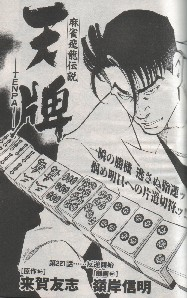
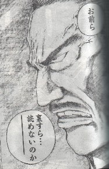
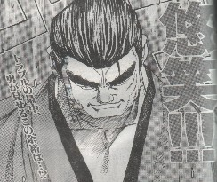
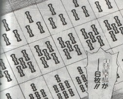

Book review 書壇。
（５３）平成15年度・コミック大賞
毎年恒例の麻雀コミック大賞。しかし残念ながら、今年はσ(-_-)の琴線に触れる作品はなかった....
※過去の受賞作は、選考の対象外。
ちまたでは漫画ゴラク連載の天牌（来賀友志原作。嶺岸信明画）が話題となっている。

たしかに力の入った作品だし、これだけ話題になっているから、コミック大賞の候補作。しかしストーリーやキャラクターがどうもσ(-_-)好みでない....
＃登場人物が、みんな下から人をねめあげるような上目使いばっかりなのが気になって気になって....
そこで天牌には、特別に話題賞を進呈するとして、今年度コミック大賞は受賞作無しとした。選考委員としても、あぁ残念だ。(-_-；
このほかで印象に残ったのが、近代麻雀連載の「覇王」
なんだかよく分からない作品だけど、下記のフレーズは大傑作。うちのサークルでも、少し流行った。(^-^；

それと、野上の勇というキャラクターが、なんだかカッコイイ。(^-^)

１枚とか２枚じゃなくて、６枚もすりかえるイカサマなんて感動的。すっかりファンになってしまった。(^-^；
